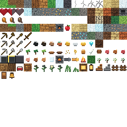

Voxel Engine
Chunked terrain, greedy mesh generation, texture atlas rendering, water surfaces, lighting, and first-person camera control.
A Minecraft-like desktop voxel engine with procedural terrain, chunk meshing, inventory and crafting systems, passive mobs, villagers, villages, and a growing library of build-friendly decorative blocks.

Chunked terrain, greedy mesh generation, texture atlas rendering, water surfaces, lighting, and first-person camera control.
Mining, placement, inventory, hotbar, crafting, furnaces, tools, item drops, food, health, hunger, and persistence.
Biomes, ores, trees, plants, passive animals, village generation, villagers, professions, schedules, and trading foundations.
Stairs, fences, gates, doors, beds, lamps, lanterns, bells, flowers, grasses, and future-ready decorative block hooks.
Gradle packaging produces a runnable fat JAR with LWJGL/JOML dependencies and platform native libraries included.
GitHub Pages documentation, release notes, source archive task, and clear commands for local inspection and play.
The game is designed for mouse-look first-person desktop play.
W A S DMouseSpaceLeft mouseRight mouse1-9EF9Build the desktop JAR with Gradle, then launch it with Java.
powershell -ExecutionPolicy Bypass -File scripts\build.ps1
java --enable-native-access=ALL-UNNAMED -jar build\libs\voxel-game.jar
This release is a native LWJGL/OpenGL desktop game. GitHub Pages hosts the inspection site, while playable builds are distributed through GitHub Releases. A web-playable port would require a separate WebGL/TeaVM rendering and input backend.